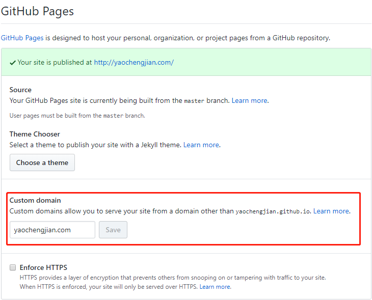
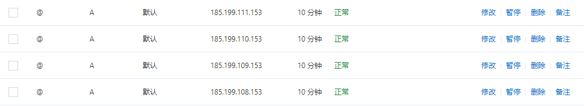

One minute
1 - 如何使用hugo搭建个人博客
1.如何使用 hugo 搭建个人博客
a:进入https://gohugo.io/官网，下载并安装hugo
b:我的电脑->属性->高级系统设置->环境变量->path->添加你 hugo 的路径地址
c:hugo version 查看自己的版本,可以看到就代表自己 hugo 安装没问题
d:在 hugo 官网点击 Quick Start 根据步骤一步步实现(下面都是用命令行操作)
1)hugo new site demo(demo 可以更改为自己想要的名字)
2)cd demo 进入 demo
3)git init
4)git submodule add https://github.com/budparr/gohugo-theme-ananke.git themes/ananke
5)echo ‘theme = “ananke”’ » config.toml
6)hugo new posts/my-first-post.md(my-first-post 可以更改为自己想要的内容)
7)hugo server -D 可以得到一个预览地址
8)打开 config.toml 配置
baseURL = "yaochengjian.com" //更改为自己购买的域名
languageCode = "zh-CN"
title = "姚成健的博客"
theme = "ananke"
9)hugo -D
10)上面的完成之后，我们会看到 demo 里面有一个 public 文件名,我们也要在里面 git init 每次只需要提交这个文件里面的内容到 github 仓库即可！！！
11)在 github 上面创建一个仓库,这里我创建仓库名字是(yaochengjian.github.io),进入仓库找到 settings,设置自己购买的域名

12)完成购买域名后，我们需要解析 4 条记录

13)上面步骤就完成了一个博客搭建啦~需要注意的是,我们需要在 content\posts 里面添加自己的内容,添加完成后都需要 hugo -D,在上传到仓库上面去。
88 Words
2019-12-25 21:54 +0800